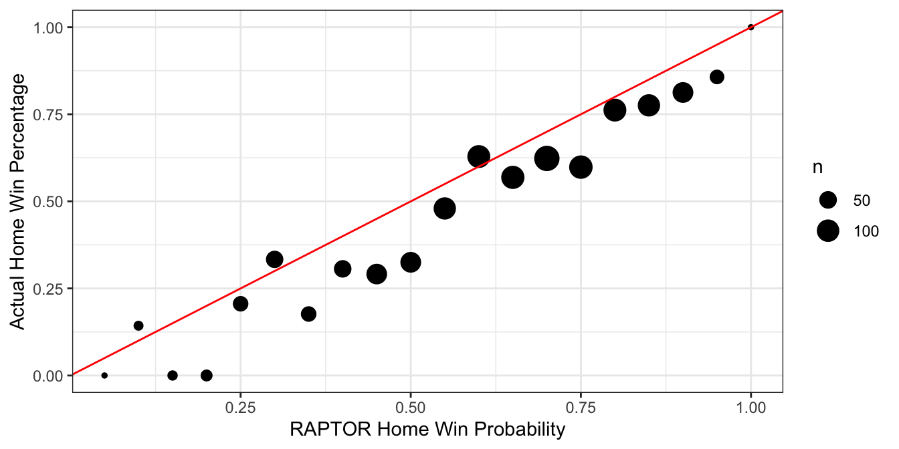
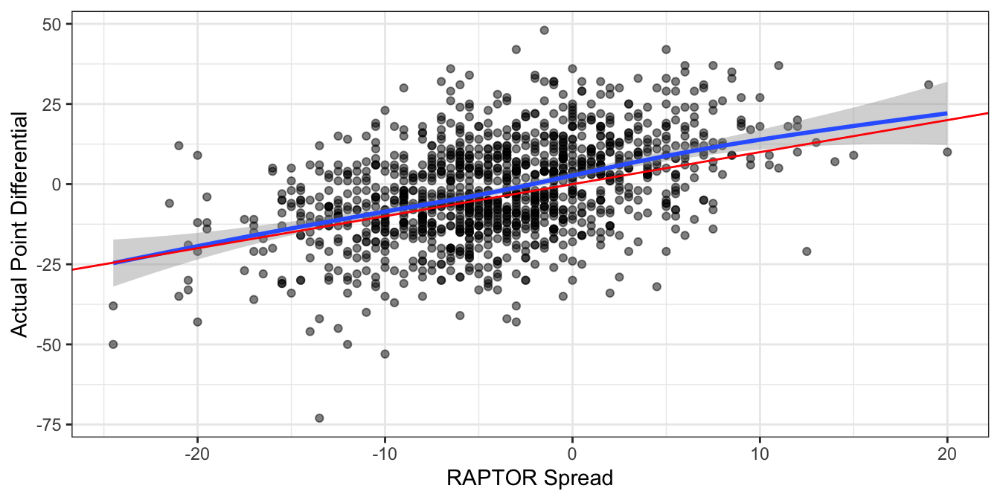
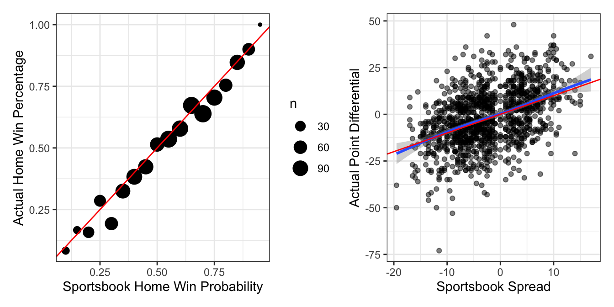
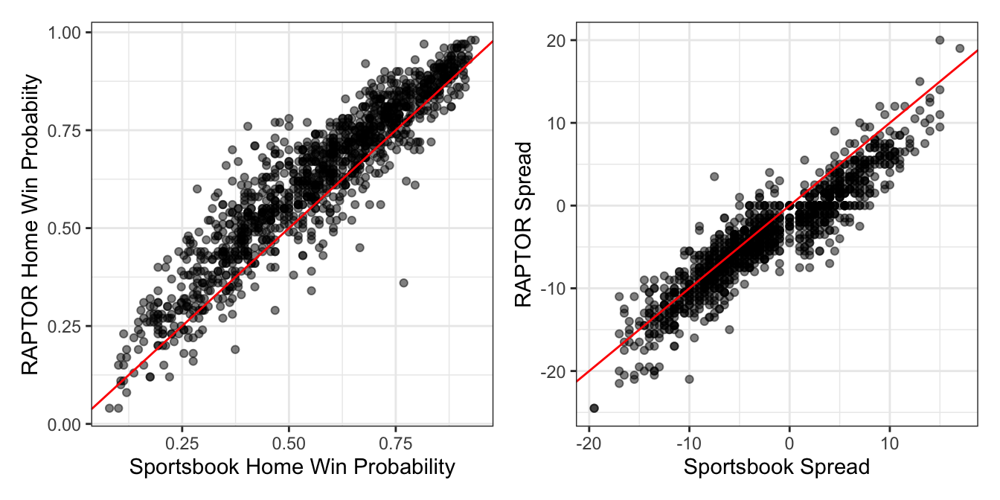
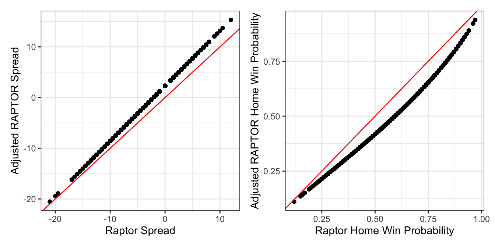

Navigate to FiveThirtyEight’s daily NBA predictions webpage and you will find compact previews of upcoming games that include a “RAPTOR spread,” meant to express the projected point differential between the two competing teams.
FiveThirtyEight did not design RAPTOR in order to create accurate betting lines for single NBA games. Rather it’s a metric used to evaluate individual players by updating Box Plus-Minus with player tracking data and then combining it with another established basketball statistic, On/Off Ratings. To arrive at a point spread for a particular game, FiveThirtyEight aggregates the average RAPTOR across a roster (weighted by projected playing time), and compares it with that of an opponent.
All of that is to say that I don’t expect RAPTOR to be good at predicting NBA games, especially if they don’t have up-to-the-minute injury news. But if you’re going to throw up point spreads, I can’t help but see how accurate they are and compare them to the lines that Vegas offers, which are usually nearly impossible to beat.
Aggregating and parsing all of FiveThirtyEight’s predictions for the 2021-2022 season is pretty straightforward once you click “Show More Games” on the aforementioned page and then download the HTML. All 1,230 regular season games are successfully accounted for; unspool the code below if you’re interested in the mechanics.
Code
library(tidyverse)
library(lubridate)
library(rvest)
library(patchwork)
library(knitr)
library(boot)
options(dplyr.summarise.inform = FALSE)
odds_to_prob <- function(odds){
ifelse(odds > 0, 100/(odds + 100), -odds/(-odds + 100))
}
prob_to_odds <- function(prob){
ifelse(prob > 0.5, prob/(1-prob)*-100, (1-prob)/prob*100)
}
odds_to_payout <- function(odds, bet){
ifelse(odds > 0, odds*(bet/100), -bet/odds*100)
}
kelly_bet <- function(win_prob, odds){
win_prob + (win_prob - 1)/(ifelse(odds > 0, odds/100, 100/-odds))
}
page <- read_html("raptor.html")
page_completed <- page %>%
html_nodes("#completed-days")
dates <- page_completed %>%
html_nodes(".day") %>%
html_nodes(".h3") %>%
html_text()
raptor_long <- map(1:length(dates), ~{
game_block <- page_completed %>%
html_nodes(paste0(".day:nth-child(", .x + 1, ')'))
date <- game_block %>%
html_nodes(".h3") %>%
html_text()
teams <- game_block%>%
html_nodes(".text") %>%
html_text()
spreads <- game_block %>%
html_nodes(".number.spread") %>%
html_text()
probs <- game_block %>%
html_nodes(".number.chance") %>%
html_text()
scores <- game_block %>%
html_nodes(".number.score") %>%
html_text()
df <- data.frame(
date = date,
ha = rep(c('away', 'home'), length(teams)/2),
team = teams,
spread = spreads,
prob = probs,
score = scores
)
df
}
) %>%
bind_rows()
raptor_long_cleaned <- raptor_long %>%
group_by(ha) %>%
mutate(game = row_number()) %>%
ungroup() %>%
mutate(spread = as.numeric(ifelse(spread == "PK", 0, spread))) %>%
mutate(spread = ifelse(ha == "home", spread, -spread)) %>%
group_by(game) %>%
mutate(spread = max(spread, na.rm = T)) %>%
ungroup() %>%
mutate(prob = as.numeric(str_replace(prob, "%", ""))/100) %>%
mutate(score = as.numeric(score)) %>%
mutate(date = str_extract(date, ".*[0-9]+")) %>%
mutate(date = coalesce(as_date(date, format = "%A, %b. %d"),
as_date(date, format = "%A, %B %d"))) %>%
mutate(date = if_else(month(date) >= 10, date - years(1), date)) %>%
mutate(team = ifelse(str_detect(team, "[1-4]"),
str_extract(team, "([a-z, A-Z, 6-7])*(?=[1-4])"),
team))
raptor <- raptor_long_cleaned %>%
filter(ha == "home") %>%
filter(date <= "2022-04-11") %>%
select(date, team, spread, prob, score, game) %>%
inner_join(raptor_long_cleaned %>%
filter(ha == "away") %>%
select(date, team, score, game),
by = c("date", "game"),
suffix = c("_home", "_away")) %>%
mutate(diff = score_away - score_home,
home_win = score_home > score_away)Before examining the spreads, we can run some basic diagnostics on the win probabilities that FiveThirtyEight also provides. Any probabilistic predictions should at the least be “calibrated,” which means that when you assign an event 50% probability, over time about 50% of those events should occur.
But RAPTOR’s win probabilities seem to systematically overrate home teams and especially home underdogs. Nearly every point on the graph below, where I’ve grouped home team win probabilities into 5% buckets, falls short of the identity line, meaning that the actual win percentage is lower than its projection. Take the point at 0.5 on the x-axis for example: games that RAPTOR thinks are a fair coin flip for the home team are actually losses 65% of the time.

There’s a similar albeit more understated theme when comparing point spreads to the ultimate point differentials in each game. Note that the spread and differential are again always in terms of the home team, so that -5 would indicate a 5-point home favorite (or a 5-point home win). It’s subtle, but the gap below the blue smooth trend line and above the red identity line indicates that the spreads in general should be more positive (i.e. favor the home team less), especially for home dogs.

It would appear that RAPTOR spreads and win probabilities could use a bump toward the away team. As a recently as the 2019-2020 season, however, the calibration of their predictions was quite healthy, at least according to a review the website did of their own forecasts. One wonders if the COVID pandemic that led first to empty arenas and then to limited capacity events threw off their models’ grasp of homecourt advantage.
Let’s now compare them to the famously sharp lines offered by sportsbooks, which I’m sourcing from sportsbooksreviewsonline.com. While spreads will vary by as much as a point between different sportsbooks, they’re typically close enough that consensus lines like these will be sufficient for the analysis. Two of the 1,230 regular season games were missing lines, but I used Action Network spreads to fill those in.
Again, all data cleaning code below for those interested.
Code
team_map <- tribble(
~city, ~team,
"Atlanta", "Hawks",
"Boston", "Celtics",
"Brooklyn", "Nets",
"Charlotte", "Hornets",
"Chicago", "Bulls",
"Cleveland", "Cavaliers",
"Dallas", "Mavericks",
"Denver", "Nuggets",
"Detroit", "Pistons",
"GoldenState", "Warriors",
"Houston", "Rockets",
"Indiana", "Pacers",
"LAClippers", "Clippers",
"LALakers", "Lakers",
"Memphis", "Grizzlies",
"Miami", "Heat",
"Milwaukee", "Bucks",
"Minnesota", "Timberwolves",
"NewOrleans", "Pelicans",
"NewYork", "Knicks",
"OklahomaCity", "Thunder",
"Orlando", "Magic",
"Philadelphia", "76ers",
"Phoenix", "Suns",
"Portland", "Trail Blazers",
"Sacramento", "Kings",
"SanAntonio", "Spurs",
"Toronto", "Raptors",
"Utah", "Jazz",
"Washington", "Wizards"
)
sportsbook_raw <- readxl::read_xlsx("nba odds 2021-22.xlsx")
sportsbook_raw <- sportsbook_raw %>%
select(Date, Rot, VH, Team, Final, Close, ML) %>%
mutate(Close = ifelse(Close %in% c("pk", "PK"), "0", Close)) %>%
mutate(Close = as.numeric(Close)) %>%
mutate(game = ceiling(row_number()/2)) %>%
mutate(Date = as.character(Date)) %>%
mutate(month = ifelse(nchar(Date) == 4, substr(Date, 1, 2), substr(Date, 1, 1))) %>%
mutate(day = ifelse(nchar(Date) == 4, substr(Date, 3, 4), substr(Date, 2, 3))) %>%
mutate(year = ifelse(nchar(Date) == 4, 2021, 2022)) %>%
mutate(Date = ymd(paste(year, month, day))) %>%
mutate(Close = case_when(
game == 890 & VH =="H" ~ -4,
game == 913 & VH =="H" ~ -8.5,
TRUE ~ Close
))
sportsbook <- sportsbook_raw %>%
filter(VH == "V") %>% select(-VH, -Rot) %>%
inner_join(sportsbook_raw %>%
filter(VH == "H") %>%
select(-VH, -Rot),
by = c('game', 'Date'),
suffix = c(".v", ".h")) %>%
filter(Close.v < 100 | Close.h < 100) %>%
mutate(spread = ifelse(Close.h < 100, -Close.h, Close.v),
total = ifelse(Close.h > 100, Close.h, Close.v),
wp_home = ifelse(ML.h > 0, 100/(ML.h + 100), -ML.h/(-ML.h + 100)),
wp_away = ifelse(ML.v > 0, 100/(ML.v + 100), -ML.v/(-ML.v + 100)),
ML_juice = wp_home + wp_away - 1) %>%
mutate(wp_home = wp_home/(1 + ML_juice),
wp_away = wp_away/(1 + ML_juice)) %>%
select(date = Date,
team_away = Team.v,
team_home = Team.h,
spread,
prob = wp_home,
ML_home.sb = ML.h,
ML_away.sb = ML.v,
total,
score_away = Final.v,
score_home = Final.h) %>%
mutate(home_win = score_home > score_away,
diff = score_away - score_home) %>%
filter(date <= "2022-04-11") %>%
inner_join(team_map, by = c("team_home" = "city")) %>%
select(-team_home) %>% rename(team_home = team) %>%
inner_join(team_map, by = c("team_away" = "city")) %>%
select(-team_away) %>% rename(team_away = team)Reproducing the above graphs seems to indicate that the sportsbooks don’t suffer from the same bias toward home teams, as both the calibration and smoothed fit between spreads and results are more faithful to the identity line.
 Putting two and two together, you’d expect the RAPTOR win probabilities to be higher than the sportsbooks’, and their spreads to favor the home team more – at least when they’re underdogs, which we do indeed observe. As a technical note, RAPTOR spreads of +0.5 and -0.5 were converted to 0 (“pick ’em”) to match the sportsbooks, since functionally there’s no difference in games that can’t end in ties.

So what if FiveThirtyEight opened a sportsbook and offered their RAPTOR lines to the public? Let’s pretend they posted the standard -110 odds for either side of their spreads and converted their win probabilities into moneylines with an extra 5% juice:

A naive approach would be to simply bet whenever we felt like we had an advantage, according to the sportsbook lines. So if FiveThirtyEight was offering a spread of -3.5/+3.5 for that Bucks vs. Cavs game and the Vegas line was -5.5/+5.5, we would bet on the Bucks -3.5, since our information implies our wager will win more than half the time. The same applies to the moneylines.
At $100 a bet, you’d make over $13,000 on spread bets or 11% ROI on about $114,000 of bets. On the moneyline bets, you’d make over $32,000, or 26% ROI on about $123,000 of bets:
| type | bets | wagered | wins | losses | push | profit | ROI |
|---|---|---|---|---|---|---|---|
| spreads | 1144 | $114,400 | 656 | 466 | 22 | $13,036 | 11.40% |
| moneyline | 1228 | $122,800 | 577 | 651 | 0 | $32,450 | 26.43% |
But any degenerate gambler will tell you that’s not how to optimally size your bets. The bigger the perceived advantage, the more you’re supposed to wager as a proportion of your bankroll – such is the principle that underpins the Kelly Criterion. If your advantage isn’t big enough to cover the vig, then you hold on to your money.
Deriving an expected advantage is simple with moneylines, since outcomes are binary and we can just compare the implied probabilities. Differences in spreads require us to estimate what fraction of outcomes might fall between the two lines. In terms of the previous Bucks vs. Cavs example, how often will the Bucks win by 4 or 5 points to cash RAPTOR’s -3.5 line but not the sportsbooks’ -5.5?
We could compare point differentials in our existing datasets, or we could examine alternative spreads on sportsbooks that are offered at various prices besides -110. Either approach yields a similar answer: each additional point is worth about 3% of expected value, so we will proceed with that assumption.
Applying Kelly bets on a $1000 bankroll yields even better results. You’d make over $21,000 on spread bets or 16% ROI on about $133,000 of bets. On the moneyline bets, you’d make over $42,000, or close to 34% ROI on about $126,000 of bets:
| type | bets | wagered | wins | losses | push | profit | ROI |
|---|---|---|---|---|---|---|---|
| spreads | 981 | $133,020 | 574 | 387 | 20 | $21,211 | 15.95% |
| moneyline | 1052 | $126,368 | 473 | 579 | 0 | $42,634 | 33.74% |
None of this analysis is meant to denigrate the work done on the RAPTOR metric or in general at FiveThirtyEight, a website that has consistently published a high standard of data journalism since its inception. As noted before, FiveThirtyEight did not create RAPTOR to predict individual games, so pretending that they would lose vs. Vegas in doing so isn’t exactly a radical observation.
Plus, I assume that much of the sportsbooks’ advantage comes from letting their lines move up until the opening tip, either by manual intervention or via balancing incoming money from bettors.
For example, the biggest disagreement between the two datasets is a December 15th game between the Lakers, who sportsbooks saw as a 4 point favorite, and the Mavs, who RAPTOR saw as a 7 point favorite. Luka Doncic was scratched from this game, probably without enough time for RAPTOR to bake his absence into their line, which accounts for the difference. In that sense, maybe it’s impressive that one could only get away with about 16% ROI on their spreads.
So RAPTOR figures don’t beat Vegas – does that mean they’re useless? Not necessarily. It’s possible that a blend of RAPTOR and sportsbook lines might actually be the optimal solution. It’s not hard to formulate a narrative for why this might be the case. If RAPTOR expresses raw player talent, then it’s possible that sportsbook lines overreact to injuries or spurious recent trends and need to be regressed toward the true skill of the collective team.
Let’s split the data into the first and second halves of the season and fit a handful of models on the former. First we remove the home team bias from both the RAPTOR spreads and the win probabilities with simple slope-intercept models. The adjustments are simple, as you can see in both graphs that the lines are shifted toward the away team to varying degrees:
 Next we regress the results (point differential for spreads, binary won/loss for win probabilities) onto the inputs from both the sportsbooks and RAPTOR. These models are intentionally simple, with no non-linear effects or even interactions between the predictors, since it would be easy to chase noise for something as uncertain as NBA results.
Looking at the coefficients, we see that while the sportsbooks’ info is preferred in both cases, the results are still drawing some predictive power from the RAPTOR lines:
| term | estimate | std.error | statistic | p.value |
|---|---|---|---|---|
| (Intercept) | 0.35 | 0.58 | 0.60 | 0.55 |
| spread.sb | 0.60 | 0.21 | 2.84 | 0.00 |
| spread.538_adj | 0.44 | 0.22 | 2.01 | 0.04 |
| term | estimate | std.error | statistic | p.value |
|---|---|---|---|---|
| (Intercept) | -0.08 | 0.09 | -0.87 | 0.39 |
| logit(prob.sb) | 0.74 | 0.26 | 2.88 | 0.00 |
| logit(prob.538_adj) | 0.27 | 0.28 | 0.97 | 0.33 |
Is this approach profitable? It’s not good enough to simply outperform the sportsbooks’ lines, since we have to make up their house advantage too, so the blended outputs’ edge has to be somewhat significant.
Using the 600 or so games from the hold-out set that our models have not seen and applying the same Kelly Criterion from above, we get mixed results. The spread bets go a balanced 137-137-4 for a grand total of -$7, or effectively net even given that we’re wagering about $14,000. Note that while our game sample has only been cut in half, our amount wagered has dwindled to about 10% as compared to the original scenario, which tells us that our edge is much smaller.
The moneyline bets actually yield 8% ROI, though, which is a very respectable figure in an industry with razor-thin margins. These results would imply that even though the RAPTOR lines aren’t very predictive in isolation, they can be used to sharpen sportsbook lines.
| type | bets | wagered | wins | losses | push | profit | ROI |
|---|---|---|---|---|---|---|---|
| spreads | 278 | $13,757 | 137 | 137 | 4 | $-7 | -0.05% |
| moneyline | 384 | $11,113 | 149 | 235 | 0 | $869 | 7.82% |
I should finish by stating the usual disclaimers made by any financial advisor: past performance is no guarantee of future results. The advantage on moneylines seen in the second half of the season by blending sportsbooks with RAPTOR may have been luck to begin with. And even if it were real, edges in the gambling world are often only temporary as sportsbooks and bettors alike re-calibrate their strategies. If anyone at FanDuel is reading this right now, that person has all summer to take this analysis into account.
In which case, maybe I should have kept this all to myself… 🙃